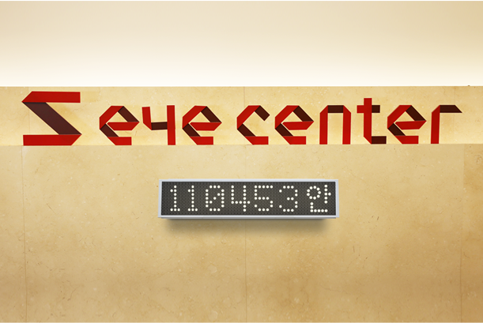

에스안과
에스안과
시력교정
노안/백내장
망막/황반변성
안구건조증
녹내장
소아안과
안성형
예약/상담
에스안과소개
에스안과소개
의료진소개
사회공헌
병원둘러보기
찾아오시는길/진료시간
에스안과 소식
안산에는
에스안과가
있습니다
분야별 8인의 의료진이 수준 높은 진료로 환자의 안전을 고민하는 안과
시력교정술
백내장, 노안
규모
평
총 진료 환자 수
분야별 안과전문의
인
경기권 최대규모
안과 전문 수술장
수술 전문 안과 에스안과
에스안과는 경기권 최대규모로 시력교정술 (라식,라섹) 부터
백내장, 노안, 녹내장, 망막수술부터 소아진료, 안구건조증까지
안심하고 치료 받으실 수 있습니다.
서울대학교 동문병원
서울대 출신 의료진 진료
에스안과는 서울대학교 동문병원입니다. 수많은 임상 경험을
바탕으로 환자 개인별로 맞춘 최적화된 진료를 통해 환자의
안전을 최우선의 가치로 추구합니다.
전문 분야별 8인의 의료진
안과 전문의로 구성된 우수 의료진
에스안과는 분야별로 특화된 8인의 의료진으로 구성되어 있어
풍부한 수술 경험과 축적된 노하우로 연구, 분석, 토론을 통해
더밝은 시력을 위해 정진하고 있습니다.
대학병원수준 장비 및 시설
에스안과의 가장 중요한 가치는 ‘안전’ 입니다
에스안과는 대형 대학병원수준의 검사 장비,수술장비를
사용합니다. 에스안과는 정확한 검사와 안전한 수술에
투자를 아끼지 않습니다.
SINCE 2005 에스안과
체계적인 수술 및 진료 시스템
지난 16여 년 동안 진료, 교육, 연구 분야에 걸쳐 아낌없는 투자와
개발을 통해 시력교정술의 발전과 변화를 선도하는 안과로
성장해왔습니다.
